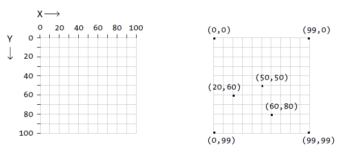

Drawing in p5
The Coordinate System
- As opposed to other environments or standard mathematical notation, Processing and most graphic environments display a particular coordinate system.
- The position of the (0, 0) coordinates point is on the top-left corner of the screen, the positive X axis goes right, and the positive Y axis goes down.
- Accordingly, angles are measured clockwise.

Basic Styling
- background() sets the color of the window
- fill() sets the shape's fill color
- stroke() sets the shape's stroke color